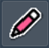
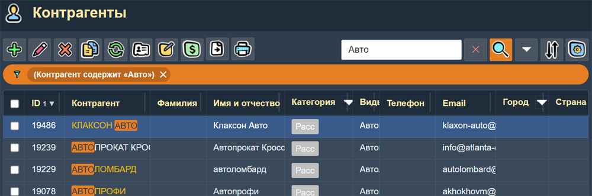
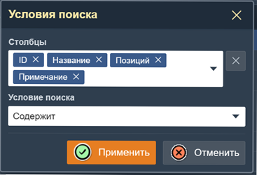
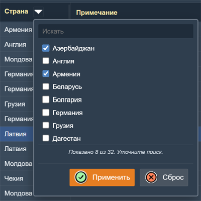
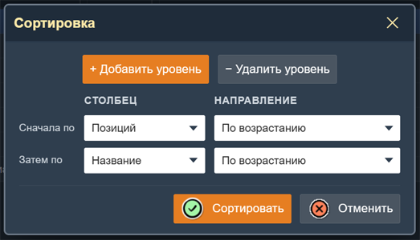
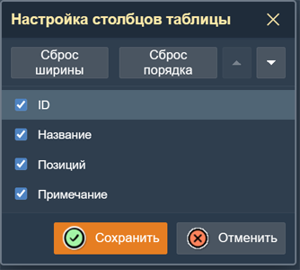
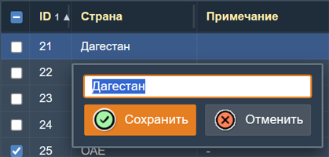

Интерфейс и основные способы работы с приложением
Компаньон является веб-приложением. Оно запускается в любом современном браузере, на любом устройстве — стационарном компьютере, ноутбуке, планшете. Для работы требуется подключение к интернету или локальной сети.
В верхней части всех страниц приложения расположено Главное меню, через которое можно перейти к любому разделу. Меню состоит из пунктов: Файлы, Документы, Склад, Справочники, Контрагенты, и Номенклатура. При наведении на пункт открывается подменю со списком страниц данного раздела.
Справа в главном меню отображается логин текущего сотрудника. Нажатие на логин открывает подменю с кнопкой Выход для завершения сеанса работы этого сотрудника.
Главное меню приложения.
Приложение построено на основе двух основных элементов: таблиц (списков записей) и форм (редактирования отдельной записи).
Работа с таблицами
Таблица отображает список записей из базы данных. В таблице удобно искать, сортировать и фильтровать данные, а также выполнять основные операции: создание, изменение и удаление записей.

Пример таблицы «Товары» с записями товаров.
Панель инструментов
Над таблицей расположена панель инструментов. Рассмотрим её кнопки:
Добавить — открывает форму для создания новой записи. Горячая клавиша - Insert.

Изменить — открывает форму для редактирования текущей (выделенной) записи. Горячие клавиши - Enter и Double Click.Удалить — удаляет выделенную запись. Перед удалением запрашивается подтверждение. Восстановить случайно удалённую запись невозможно! Горячая клавиша - Delete.
Копировать — создаёт новую запись на основе текущей (выделенной). Удобно для быстрого ввода похожих данных. Горячая клавиша - Ctrl+Insert.
Обновить — перечитывает данные из базы данных и обновляет таблицу.
Экспорт — открывает меню для выгрузки записей таблицы в файл формата CSV или Excel.
Печать — открывает меню, в котором можно выбрать вариант печати: все записи, только выбранные или текущую страницу.
Поиск и фильтрация
Справа от панели инструментов расположены средства поиска:
Быстрый поиск — поле для ввода текста. При нажатии кнопки Искать в таблице остаются только записи, содержащие введённый фрагмент текста. Кнопка Очистить (крестик) отменяет поиск.

Пример поиска в таблице Контрагенты по колонке "Контрагент"
Для настройки в каких именно колонках должен делаться поиск предназначена панель "Условия поиска", которая открывается нажатием на одноименную кнопку. В поле "Столбцы" этой панели можно выбрать по каким столюцам таблицы нужно искать. Быстро очистить это поле можно кнопкой "X", которая находится справа от этого поля. В поле "Условие поиска" можно выбрать один из вариантов условия (равно, содержит, больше, меньше и т.д.).

Над таблицей может отображаться баннер активного фильтра (оранжевого цвета) с кратким описанием текущих условий отбора. В баннере есть кнопка для быстрого снятия фильтра.
Если в таблице есть колонка, значения в которой выбираются из фиксированного списка, то в заголовке этой колонки имеется значок "Стрелка вниз", который открывает панель "Колоночного фильтра". В этой панели можно отметить те значения, которые будут использоваться для фильтрации таблицы. В списке колоночного фильтра может быть больше записей, чем их умещается в этой панели. Для поиска нужной записи нужно воспользоваться полем "Искать" в верхней части панели.

Панель колоночного фильтра в колонке Страна.
Кнопка Сортировка — открывает панель, в которой можно задать порядок сортировки записей по одному или нескольким полям. Чтобы быстро отсортировать таблицу по одной колонке, достаточно щёлкнуть по её заголовку.

Изменение порядка и ширины колонок
Кнопка Настройка колонок — открывает панель, где можно выбрать, какие колонки таблицы отображать, и изменить их порядок.

Ширину колонок таблицы можно изменять путем "перетаскивания" правой границы заголовка колонки. Восстановить исходную ширину колонок можно кнопкой "Сброс ширины" в панели настройки столбцов. А кнопкой "Сброс порядка" можно восстановить исходный порядок колонок таблицы.
Если какие то колонки таблицы не умещаются на странице, то для их просмотра можно использовать горизонтальную прокрутку, которая делается при помощи клавиш Left и Right.
Отметка строк и работа с отмеченными записями
Чтобы отметить строку в таблице, щёлкните по "галочке" (чекбоксу) в самой левой колонке таблицы. Все строки таблицы можно отметить (и снять отметки) щелчком по чекбоксу в заголовке самого левого стобца.
Отмеченные записи можно:
- экспортировать;
- распечатать;
- очистить все отметки;
- инвертировать отметки записей;
- показать только отмеченные записи.
Отмеченные товары и услуги можно также импортировать (вставить) в документы перемещения товаров и счета.
Если отмечена хотя бы одна запись, над таблицей появляется кнопка Выбрано N, открывающая меню с перечисленными действиями над отмеченными записями.
Пагинация
Если записей в таблице много, они разбиваются на страницы. Под таблицей отображаются элементы навигации: кнопки перехода к первой, предыдущей, следующей и последней странице, а также номер текущей страницы и общее количество страниц.
Инлайн редактирование в таблице
Если поле в таблице можно изменить, то при наведении на это поле в таблице в правой части этого поля появляется кнопка "Карандаш". Нажатие на эту кнопку открывает панельку "Инлайн редактира", в которой можно изменить значение поля непосредственно в таблице (не открывая форму редактирования записи).

Панель инлайн редактирования в поле "Страна"
Клавиатурные сокращения
Для ускорения работы в таблицах поддерживаются следующие комбинации клавиш:
- ↓ ↑ — перемещение выделения между строками.
- ← → — горизонтальная прокрутка колонок таблицы.
- Insert — открыть форму создания новой записи.
- Ctrl+Insert — копировать текущую строку (создать новую запись на основе текущей).
- Enter — открыть форму редактирования текущей строки.
- Delete — удалить текущую строку (с подтверждением).
- Escape — закрыть форму / закрыть панель.
- Home, End — к первой или последней строке текущей страницы.
- Ctrl+Home, Ctrl+End — к первой или последней строке таблицы.
- PgUp, PgDown — к предыдущей или следующей странице.
Работа с формами
Форма открывается в модальном окне поверх текущей страницы при добавлении или редактировании записи. Форма содержит поля для ввода данных, соответствующие структуре записи.

Пример формы редактирования записи о товаре.
В заголовке формы отображается название записи. Если создаётся новая запись, в заголовке будет указано «(новый)» или «(новая)».
Основные элементы управления формой:
- Кнопка Сохранить — сохраняет запись в базу данных и закрывает форму. Горячая клавиша - Enter. Если какое-либо обязательное поле (помечено *) не заполнено, сохранение не произойдёт, а незаполненное поле будет подсвечено.
- Кнопка Применить — сохраняет запись в базу данных но не закрывает форму.
- Кнопка Отменить — закрывает форму без сохранения изменений. Горячая клавиша - Esc.
- Кнопка Закрыть (крестик в правом верхнем углу) — также закрывает форму без изменения.
Типы полей
- Текстовое поле — для ввода произвольного текста (название, адрес, примечание).
- Поле выбора (справочник) — для выбора значения из другого справочника (например, города, страны, единицы измерения). При вводе текста работает фильтрация записей в справочнике. В правой части такого поля есть кнопка "+" для создания в справочнике новой записи.
- Числовое поле — для ввода количества, суммы, цены.
- Дата — для выбора даты с помощью встроенного календаря.
- Флажок (чекбокс) — для включения/отключения опции.
- Поле «только чтение» — информационное поле, выделенное светло желтым цветом. Его нельзя редактировать. Оно выводится только для информации.
После сохранения записи таблица автоматически обновляется, и новая/изменённая запись становится видна в списке.
Права доступа
Администратор может настроить права доступа для каждой роли сотрудников на странице Права доступа. Для каждого объекта приложения (раздела) можно установить следующие флаги запрета:
- Доступ — полностью запретить доступ к разделу (страница не открывается).
- Добавить — запретить создание новых записей.
- Изменить — запретить редактирование существующих записей.
- Удалить — запретить удаление записей.
- Записать — запретить сохранение записей (кнопка Сохранить в формах становится неактивной).
- Печать — запретить печать списка записей и экспорт данных.